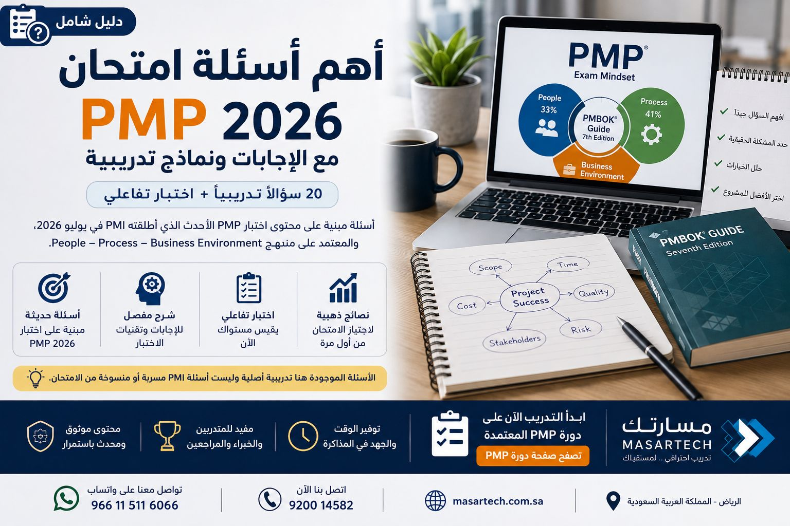

أهم أسئلة امتحان PMP 2026 مع الإجابات ونماذج تدريبية

PMP Exam 2026 · أسئلة تدريبية وسيناريوهات
تدريبك الحقيقي لا يبدأ بحفظ الإجابات، بل بفهم طريقة تفكير مدير المشروع داخل السيناريو. في هذا الدليل ستراجع أسئلة أصلية تدريبية موزعة على People وProcess وBusiness Environment، مع تفسير لماذا الإجابة صحيحة وكيف تختار «أفضل إجراء تالٍ» في الامتحان.
180 سؤالًا 240 دقيقة · أسئلة أكثر واقعية وسيناريوهات تحديث اختبار يوليو 2026
قبل أن تبدأ
الأسئلة الموجودة هنا تدريبية أصلية وليست أسئلة PMI مسرّبة أو منسوخة من الامتحان. هدفها تدريبك على أسلوب اتخاذ القرار الذي يقيسه اختبار PMP الحالي: فهم الموقف، تحديد ما يجب فعله أولًا، واختيار الإجراء الذي يحمي القيمة والفريق وأصحاب المصلحة مع الالتزام بالحوكمة المناسبة.
180 سؤالًا عدد أسئلة الاختبار الحالي
240 دقيقة مدة الامتحان
فترتا راحة 10 دقائق لكل فترة
العربية متاحة ضمن لغات الاختبار الحالية
- صفحة PMP
- الخلاصة
- شكل الامتحان
- طريقة التفكير
- الأسئلة
- People
- Process
- Business
- اختبار سريع
- FAQ
شكل اختبار PMP الحالي في 2026
أطلقت PMI النسخة المحدثة من اختبار PMP في يوليو 2026، مع إعادة توزيع وزن المجالات وزيادة التركيز على المواقف الواقعية والقيمة والاستدامة والذكاء الاصطناعي وإشراك أصحاب المصلحة.
33% People الفريق · القيادة · النزاعات · التواصل
41% Process التخطيط · التنفيذ · المخاطر · التسليم
26% Business Environment القيمة · الحوكمة · الاستراتيجية · التغيير
| العنصر | الوضع الحالي |
|---|---|
| عدد الأسئلة | 180 سؤالًا |
| المدة | 240 دقيقة |
| الراحة | فترتا راحة، مدة كل منهما 10 دقائق |
| طرق الإدارة | Predictive وAgile وتطبيقات Hybrid |
| طبيعة الأسئلة | سيناريوهات ومواقف عملية مع أسئلة تفاعلية أكثر |
| اللغات | تشمل العربية ضمن اللغات المتاحة حاليًا |
لا تحفظ نسب الاختيارات أو قواعد جامدة مثل «دائمًا اختر التواصل». كل سؤال يعتمد على السياق. أحيانًا تحتاج تحليلًا، وأحيانًا تغييرًا رسميًا، وأحيانًا إزالة عائق أمام الفريق، وأحيانًا تصعيدًا وفق الحوكمة.
كيف تفكر في أسئلة PMP السيناريو؟
1
حدد المشكلة الحقيقية
هل هي نزاع؟ تغيير؟ مخاطرة؟ عائق؟ ضعف تواصل؟ أو عدم وضوح قيمة؟
2
لاحظ المرحلة
ما الذي حدث بالفعل؟ وما الذي لم يحدث بعد؟ كلمة «أولًا» تغير الإجابة بالكامل.
3
احترم المنهجية
التعامل مع Agile لا يطابق دائمًا مشروع Predictive؛ اعرف من يملك القرار وكيف يعمل الفريق.
4
حل السبب قبل العرض
لا تقفز إلى العقوبة أو التصعيد إذا كان يمكن فهم المشكلة ومعالجة سببها أولًا.
5
احمِ القيمة
الهدف ليس إنهاء قائمة مهام؛ الهدف تحقيق النتائج والقيمة المتفق عليها.
6
استخدم الحوكمة
التغييرات والمخاطر والامتثال تحتاج اتباع العملية المناسبة بدل التصرف الفردي.
نماذج أسئلة امتحان PMP مع الإجابات
الأسئلة التالية أصلية للتدريب على منهج التفكير، وليست أسئلة فعلية من الامتحان. افتح «الإجابة والتفسير» بعد أن تختار إجابتك بنفسك.
أسئلة People: الفريق والقيادة والتواصل
سؤال 1 عضوان في الفريق يختلفان باستمرار حول طريقة تنفيذ مهمة حرجة، وبدأ النزاع يؤثر على تقدم المشروع. ما الذي يجب أن يفعله مدير المشروع أولًا؟
أ. تصعيد المشكلة إلى الراعي فورًا.
ب. استبدال أحد العضوين.
ج. فهم سبب الخلاف وتيسير حوار للوصول إلى حل.
د. تجاهل المشكلة حتى تتضح آثارها.
الإجابة والتفسير
الإجابة: ج. مدير المشروع يبدأ بفهم جذور النزاع والعمل على حله بشكل تعاوني قبل القفز إلى التصعيد أو إجراءات عقابية.
سؤال 2 فريق Agile يعتمد على مدير المشروع في اتخاذ كل قرار صغير، مما يبطئ التسليم. ما الإجراء الأفضل؟
أ. زيادة عدد الاجتماعات اليومية.
ب. تمكين الفريق من اتخاذ القرارات ضمن حدود واضحة.
ج. إضافة طبقة موافقات جديدة.
د. تحويل المشروع إلى Predictive.
الإجابة والتفسير
الإجابة: ب. في بيئة Agile، دعم الفريق وتمكينه واتخاذ القرار الأقرب للعمل يساعد على إزالة التأخير وتعزيز الملكية.
سؤال 3 انضم عضو جديد إلى فريق متعدد الثقافات ويواجه صعوبة في فهم أسلوب التواصل. ما الأفضل لمدير المشروع؟
أ. تقييم احتياجاته ودعمه بالتوجيه المناسب.
ب. إعطاؤه مهام منفردة فقط.
ج. مطالبة الفريق بالتكيف معه دون نقاش.
د. استبعاده من الاجتماعات حتى يتأقلم.
الإجابة والتفسير
الإجابة: أ. فهم احتياج العضو وإزالة عوائق الاندماج وتوفير Coaching أو Mentoring يخدم أداء الفريق.
سؤال 4 أحد أصحاب المصلحة المؤثرين أصبح غير متعاون لأنه يشعر أن احتياجاته لا تُسمع. ماذا تفعل أولًا؟
أ. حذف اسمه من سجل أصحاب المصلحة.
ب. الاجتماع معه لفهم توقعاته ومصدر عدم الرضا.
ج. إرسال تقرير أسبوعي أطول.
د. تصعيده للراعي.
الإجابة والتفسير
الإجابة: ب. قبل تعديل خطة المشاركة أو التصعيد، يجب فهم الفجوة الفعلية في التوقعات والاحتياجات.
سؤال 5 الفريق يحقق النتائج لكن معنوياته منخفضة بسبب ضغط مستمر. ما التصرف الأكثر ملاءمة؟
أ. زيادة ساعات العمل حتى انتهاء المشروع.
ب. تحليل مصادر الضغط ومعالجة عبء العمل والعوائق.
ج. استبدال أصحاب الأداء الأقل.
د. تجاهل المعنويات طالما التسليم مستمر.
الإجابة والتفسير
الإجابة: ب. الاستدامة في أداء الفريق جزء من القيادة؛ معالجة أسباب الضغط أفضل من تعظيمه حتى تتدهور النتائج.
سؤال 6 مدير وظيفي يرفض تخصيص مورد مهم للمشروع رغم اتفاق سابق. ما الخطوة الأولى؟
أ. إنهاء المشروع.
ب. مناقشة القيود والأولويات معه والبحث عن حل متفق عليه.
ج. تقديم شكوى للإدارة العليا فورًا.
د. حذف المهمة التي تحتاج المورد.
الإجابة والتفسير
الإجابة: ب. التعاون والتفاوض وفهم القيود يسبقان التصعيد عادةً عندما تكون المشكلة قابلة للحل على المستوى الحالي.
أسئلة Process: التغيير والمخاطر والتخطيط والتسليم
سؤال 7 أثناء مشروع Predictive، طلب عميل تغييرًا كبيرًا قد يؤثر على الوقت والتكلفة. ما الذي يجب أن يفعله مدير المشروع أولًا؟
أ. تنفيذ التغيير للحفاظ على رضا العميل.
ب. رفض التغيير لأنه متأخر.
ج. تقييم أثر التغيير وإدخاله في عملية التحكم بالتغيير.
د. مطالبة الفريق بالعمل الإضافي.
الإجابة والتفسير
الإجابة: ج. في Predictive، الطلب يحتاج تحليل أثر واتباع عملية التغيير الرسمية قبل التنفيذ.
سؤال 8 ظهر خطر جديد لم يكن مسجلًا وقد يؤثر على موعد التسليم. ما الإجراء الأول؟
أ. تجاهله حتى يقع.
ب. تسجيله وتحليله وتحديد الاستجابة المناسبة.
ج. زيادة الاحتياطي دون تحليل.
د. إبلاغ العميل أن الموعد سيتأخر.
الإجابة والتفسير
الإجابة: ب. الخطر الجديد يجب إدخاله في عملية إدارة المخاطر ثم تحليل الاحتمالية والأثر وتحديد الاستجابة والمالك.
سؤال 9 في مشروع Agile، يطلب صاحب المنتج إضافة قصة مستخدم جديدة عالية القيمة أثناء Sprint جاري. ما الأفضل؟
أ. إدخالها مباشرة وإيقاف العمل الحالي.
ب. مناقشتها وإضافتها للـProduct Backlog وترتيب أولويتها وفق العملية المتبعة.
ج. رفضها حتى نهاية المشروع.
د. تحويلها إلى Change Request تقليدي دائمًا.
الإجابة والتفسير
الإجابة: ب. في Agile تتم إدارة المتطلبات المتغيرة عبر الـBacklog والأولوية، مع احترام هدف الـSprint والاتفاقات القائمة.
سؤال 10 تأخر مورد خارجي وأصبح المسار الحرج معرضًا للخطر. ما التصرف الأفضل أولًا؟
أ. إلغاء العقد فورًا.
ب. تحليل أثر التأخير ومراجعة خيارات الاستجابة والعقد.
ج. تغيير خط الأساس دون موافقة.
د. مطالبة الفريق الداخلي بتغطية كل العمل فورًا.
الإجابة والتفسير
الإجابة: ب. يلزم فهم الأثر والالتزامات التعاقدية والبدائل قبل اختيار الاستجابة.
سؤال 11 أظهرت مراجعة الجودة أن المخرجات لا تطابق معيارًا متفقًا عليه. ما الأولوية؟
أ. تسليمها ثم إصلاحها لاحقًا.
ب. تحليل سبب عدم المطابقة واتخاذ إجراء تصحيحي.
ج. تغيير معيار الجودة ليتوافق مع المخرج.
د. تجاهل المشكلة إذا كان العميل لم يلاحظها.
الإجابة والتفسير
الإجابة: ب. معالجة عدم المطابقة وسببها تحمي جودة التسليم وتمنع تكرار العيب.
سؤال 12 مشروع Hybrid يعاني من تأخر القرارات لأن الجزء Predictive والجزء Agile يستخدمان قنوات تواصل منفصلة. ماذا تفعل؟
أ. إجبار الجميع على استخدام Agile فقط.
ب. تصميم آلية تواصل وتكامل توضح المعلومات والمسؤوليات بين الجزأين.
ج. فصل المشروع إلى مشروعين دون تحليل.
د. زيادة التقارير فقط.
الإجابة والتفسير
الإجابة: ب. نجاح Hybrid يعتمد على تكامل طرق العمل لا مجرد تشغيل منهجين منفصلين.
سؤال 13 أحد أعضاء الفريق أبلغ عن مشكلة قد تتحول إلى خطر أكبر، لكن لا توجد بيانات كافية. ما التصرف الأفضل؟
أ. تجاهلها لعدم وجود دليل كامل.
ب. جمع المعلومات اللازمة وتقييمها وتوثيقها حسب طبيعتها.
ج. إبلاغ الإدارة أن المشروع فشل.
د. إضافة احتياطي مالي عشوائي.
الإجابة والتفسير
الإجابة: ب. القرارات تُبنى على معلومات مناسبة؛ اجمع ما يكفي لتصنيف القضية أو الخطر وتحديد الاستجابة.
سؤال 14 العميل يرفض تسليمًا لأن معايير القبول غير واضحة لكل الأطراف. ما الدرس الأهم؟
أ. معايير القبول يجب توضيحها والاتفاق عليها مبكرًا.
ب. العميل لا يجب أن يشارك في القبول.
ج. مدير المشروع يقرر القبول بمفرده.
د. حذف معايير القبول يوفر الوقت.
الإجابة والتفسير
الإجابة: أ. وضوح معايير القبول يقلل إعادة العمل والنزاعات ويجعل تعريف «تم» أو التسليم المقبول مفهومًا.
أسئلة Business Environment: القيمة والحوكمة والاستراتيجية
سؤال 15 تغيرت استراتيجية المؤسسة وأصبح المشروع أقل قيمة من مبادرة أخرى. ماذا يجب على مدير المشروع فعله؟
أ. إخفاء التغيير عن الفريق.
ب. تقييم أثر التغيير على مبررات المشروع والتصعيد للحوكمة المناسبة لاتخاذ القرار.
ج. الاستمرار لأن المشروع بدأ بالفعل.
د. زيادة نطاق المشروع دون موافقة.
الإجابة والتفسير
الإجابة: ب. المشروع يجب أن يظل متوافقًا مع القيمة والاستراتيجية؛ القرارات الجوهرية تمر عبر الحوكمة المناسبة.
سؤال 16 ظهر تنظيم جديد قد يؤثر على المنتج قبل الإطلاق. ما الإجراء الأنسب؟
أ. تجاهله حتى يصبح إلزاميًا.
ب. تحليل أثره وإشراك المختصين وتحديث خطة الامتثال والاستجابة.
ج. إلغاء المشروع مباشرة.
د. نقل مسؤولية الامتثال للعميل.
الإجابة والتفسير
الإجابة: ب. البيئة التنظيمية جزء من سياق الأعمال، ويجب تقييم أثر التغيير وإدارة الامتثال بشكل استباقي.
سؤال 17 اقترح الفريق استخدام أداة ذكاء اصطناعي لتسريع تحليل البيانات، لكن المؤسسة لديها سياسة صارمة للخصوصية. ما الأفضل؟
أ. استخدامها فورًا لأنها توفر الوقت.
ب. تقييم القيمة والمخاطر والامتثال قبل اعتمادها.
ج. منع كل استخدام للذكاء الاصطناعي دائمًا.
د. ترك القرار لكل عضو.
الإجابة والتفسير
الإجابة: ب. الأدوات الجديدة تُقيَّم وفق القيمة والمخاطر والسياسات والخصوصية والحوكمة، وليس على السرعة وحدها.
سؤال 18 يمكن تقليل التكلفة باستخدام مادة أقل استدامة، لكن ذلك يتعارض مع أهداف المؤسسة المعلنة. ماذا تفعل؟
أ. اختيار الأرخص تلقائيًا.
ب. تقييم المفاضلة وربط القرار بالقيمة والأهداف والاستدامة وأصحاب المصلحة.
ج. تجاهل أهداف الاستدامة لأنها ليست جزءًا من الجدول.
د. اتخاذ القرار دون توثيق.
الإجابة والتفسير
الإجابة: ب. القرار المهني يوازن القيمة والتكلفة والاستراتيجية والاستدامة بدل تحسين عامل واحد على حساب باقي الأهداف.
سؤال 19 بعد تسليم مخرج رئيسي، لم تظهر القيمة التجارية المتوقعة رغم أن المشروع «على الوقت والميزانية». ما الذي ينبغي مراجعته؟
أ. لون التقارير.
ب. مؤشرات القيمة والنتائج والافتراضات التي بُني عليها Business Case.
ج. عدد الاجتماعات.
د. فقط معدل إنفاق الميزانية.
الإجابة والتفسير
الإجابة: ب. النجاح لا يقتصر على الوقت والتكلفة؛ يجب مراجعة هل المشروع يحقق النتائج والقيمة المستهدفة.
سؤال 20 يطلب مسؤول تنفيذي تجاوز عملية حوكمة معتمدة لتسريع قرار حساس. ما الأفضل؟
أ. تنفيذ الطلب لأن المسؤول أعلى منصبًا.
ب. توضيح متطلبات الحوكمة والمخاطر واتباع المسار المناسب.
ج. إخفاء القرار عن الفريق.
د. تغيير الوثائق بعد التنفيذ.
الإجابة والتفسير
الإجابة: ب. الحوكمة والامتثال لا تُلغى بسبب ضغط السرعة؛ يجب توضيح العواقب واتباع العملية المناسبة.
اختبار PMP سريع: 10 أسئلة
اختر إجابة واحدة لكل سؤال ثم اضغط «احسب نتيجتي». الهدف قياس طريقة التفكير، لا حفظ الإجابات.
1. صاحب مصلحة يطلب تغييرًا مهمًا في مشروع Predictive. ما أول خطوة؟
2. نزاع بين عضوين يؤثر على الفريق. ما الأفضل أولًا؟
3. خطر جديد ظهر أثناء التنفيذ. ماذا تفعل؟
4. فريق Agile يعتمد على المدير في كل قرار. ما الأفضل؟
5. تغير تنظيمي قد يؤثر على المنتج. ماذا تفعل؟
6. أداة AI قد تسرّع العمل لكن توجد قيود خصوصية. القرار الأفضل؟
7. العميل رفض مخرجًا بسبب غموض معايير القبول. ما الدرس؟
8. المشروع على الوقت والميزانية لكن القيمة لم تتحقق. ماذا تراجع؟
9. صاحب المنتج يريد قصة جديدة أثناء Sprint. ما الأفضل؟
10. مسؤول تنفيذي يطلب تجاوز الحوكمة. ما الأفضل؟
كيف تتعامل مع الوقت في 180 سؤالًا؟
اقرأ آخر سطر أولًا
اعرف المطلوب: أولًا؟ التالي؟ الأفضل؟ كان يجب أن يفعل؟ ثم اقرأ السيناريو.
استبعد الإجابات المتطرفة
الإلغاء والعقاب والتصعيد الفوري غالبًا تحتاج سببًا قويًا في السيناريو.
لا تتعطل
إذا استهلك سؤال وقتًا مبالغًا، اختر أفضل إجابة متاحة وواصل ثم ارجع حسب نظام الاختبار.
قاعدة تدريب مفيدة: بعد كل سؤال خاطئ، لا تكتب فقط «الإجابة ب». اكتب سبب خطأ تفكيرك: هل لم تلاحظ كلمة «أولًا»؟ هل خلطت Agile بـPredictive؟ هل قفزت للتصعيد؟ هذه الملاحظات هي التي ترفع مستواك.
مقالات ودورات تكمل استعدادك
كيفية التحضير لـPMP خطة مذاكرة منظمة قبل دخول مرحلة المحاكاة المكثفة. اقرأ الدليل
هل تريد الانتقال من حل الأسئلة إلى خطة اختبار كاملة؟
إذا كنت تستعد فعلًا لاختبار PMP، لا تجعل المذاكرة قائمة أسئلة فقط. تحتاج فهم المنهجية، سيناريوهات People وProcess وBusiness Environment، ومراجعة أخطائك ومحاكاة الوقت.
المصدر الرسمي
راجع دائمًا صفحة PMP الرسمية ومخطط محتوى الاختبار من PMI لمعرفة أحدث شكل للاختبار والمتطلبات. كما توفر PMI على صفحة الشهادة أمثلة محدودة لأسئلة تدريبية رسمية.
- PMI – Project Management Professional (PMP)
- PMI – تحديث اختبار PMP لعام 2026
استفسر عن دورة PMP
دورات ذات صلة
دورة Certified Crisis Management Professional | إدارة الأزمات
المدة: 5 Days
أقرب موعد: سيتم تحديده قريبًا
عرض تفاصيل البرنامج
دورة Palo Alto Network Security Professional | أمن الشبكات
المدة: 5 Days
أقرب موعد: سيتم تحديده قريبًا
الأسئلة الشائعة
كم عدد أسئلة امتحان PMP في 2026؟
اختبار PMP الحالي يتكون من 180 سؤالًا، ومدته 240 دقيقة.
هل توجد أسئلة PMP مسربة؟
هذه المقالة لا تستخدم أو تقدم أسئلة مسربة. التدريب الأفضل يكون على أسئلة أصلية ومحاكاة مبنية على مخطط الاختبار ومجالاته.
هل امتحان PMP كله اختيار من متعدد؟
الاختبار يتضمن صيغًا وأساليب تفاعلية وسيناريوهات، لذلك لا تعتمد على حفظ نمط واحد للأسئلة.
ما أكثر نوع أسئلة مهم في PMP؟
أسئلة السيناريو واتخاذ القرار مهمة جدًا، لأن الاختبار الحالي يركز على تطبيق المعرفة في مواقف مشاريع واقعية عبر Predictive وAgile وHybrid.
ما توزيع مجالات اختبار PMP؟
People بنسبة 33%، وProcess بنسبة 41%، وBusiness Environment بنسبة 26% في الاختبار المحدث.
هل أسئلة الذكاء الاصطناعي موجودة في PMP؟
تحديث 2026 أضاف تركيزًا أكبر على موضوعات مثل الذكاء الاصطناعي والاستدامة والقيمة وإشراك أصحاب المصلحة ضمن سياق إدارة المشاريع.
هل اختبار PMP متاح بالعربية؟
نعم، العربية مدرجة حاليًا ضمن لغات الاختبار لدى PMI.
كم فترة راحة في امتحان PMP؟
يتضمن الاختبار حاليًا فترتي راحة مدة كل واحدة 10 دقائق.
هل حل الأسئلة وحده يكفي للنجاح؟
لا. الأسئلة أداة لقياس الفهم، لكن تحتاج أساسًا في إدارة المشاريع، فهم طرق Predictive وAgile وHybrid، وتدريبًا على تحليل السيناريو وإدارة الوقت.